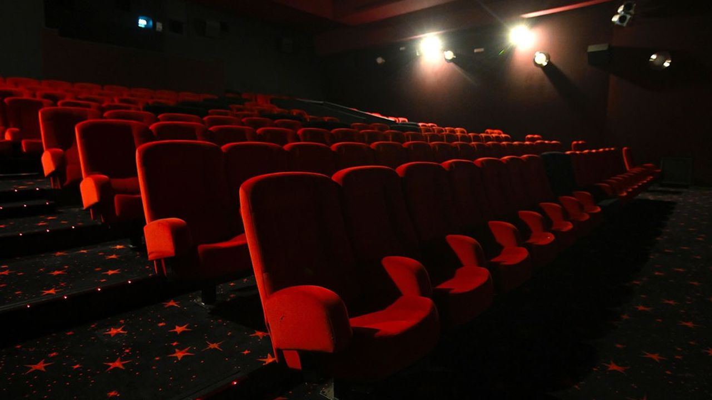

Eviter le zombie
Vous choisissez d’esquiver ce pauvre zombie, il est assez loin pour pas vous voir ni vous entendre et puis il boite donc
vous aurez largement le temps de fuir dans le premier bâtiment que vous verrez.
Vous contourner ce dernier et vous observer un géant bâtiment, un bowling plus exactement
Ce dernier parait en assez bonne état pour y passer un peu de temps, mit appart l’entrer le reste est correct,
en vous faufilant entre les décombre de l’entrer vous faite tomber plusieurs cannettes ainsi que des bouts de métal,
et malheureusement le seul zombie qu’il y avais vous as entendu,
après avoir lancer un cri semblable a ceux que vous avez déjà entendu ce dernier ce met à courir vers vous, surprit,
vous ne vous attendez pas a ce que ce malheureux zombie cours aussi vite.
Sans réfléchir vous décidez de condamné la porte en utilisant votre batte pour faire tomber un bloque de béton,
vous fait levier avec toutes les forces de votre corps et au moment ou le zombie passe ses bras vous réussissez à faire tomber le bloc de béton lui coupant les deux bras
Soulager que ce monstre ne vous est pas eu vous et votre chien, un seul détail vous turlupine
Votre batte parait moins grande, cette dernière ayant casser au moment du levier, c’est ici que vous abandonner votre batte
Maintenant il est temps d’explorer ce bâtiment, un charmant bowling, cependant vous êtes un peu content que ce soit l’apocalypse, les prix sont beaucoup trop haut et vous heureux de vous servir gratuitement comme si vous aviez un abonnement
Vous posez vos affaires dernière le comptoir immense et décider de faire le point avant de vous préparer un petit festin et dormir
Maintenant il est temps d’explorer ce bâtiment, un charmant bowling, cependant vous êtes un peu content que ce soit l’apocalypse, les prix sont beaucoup trop haut et vous heureux de vous servir gratuitement comme si vous aviez un abonnement
Vous posez vos affaires dernière le comptoir immense et décider de faire le point avant de vous préparer un petit festin et dormir
Le plan de demain et de ce rendre a la grande roue, qui se situe près du quai a bateau, vous allez devoir en utiliser un pour traverser l’immense lac pour atteindre l’autre bout
Les heures passes et c’est maintenant l’heure de dormir, vous êtes un peu plus loin de chez vous mais un peu plus proche de votre famille
Cette nuit vous la passer avec votre chien près de vous histoire de vous rassurer un minimum